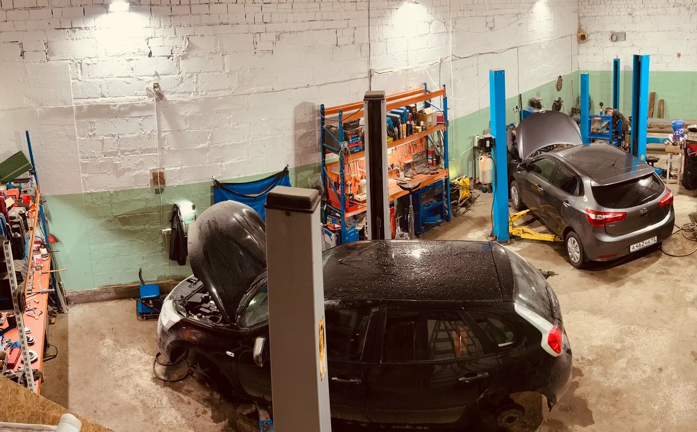
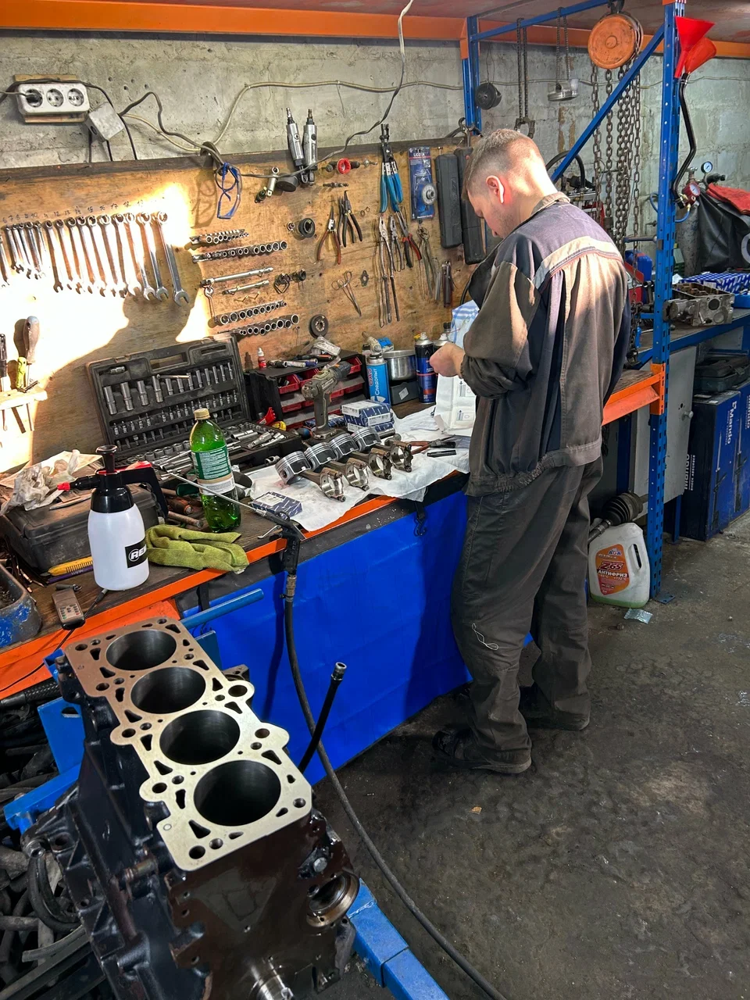

Техническое обслуживание
Замена масла, фильтров и свечей. Обслуживание тормозной системы и плановые работы.

Автосервис «Академический» в Екатеринбурге. От планового обслуживания до ремонта двигателя, коробки передач и подвески.

Автосервис «Академический»
Обслуживаем и ремонтируем легковые автомобили. Занимаемся двигателями, трансмиссией, подвеской и системами газораспределения.
Помогаем подобрать автозапчасти и определить состав ремонта. В сервисе есть 3D-стенд сход-развала и оборудование для аппаратного обслуживания систем.
Посмотреть работу мастеров01 / Услуги автосервиса
Выберите направление. Уточним состав и стоимость работ для вашей модели.
Замена масла, фильтров и свечей. Обслуживание тормозной системы и плановые работы.
Диагностика, эндоскопия, капитальный ремонт двигателя и ремонт головки блока цилиндров.
Замена ремней и цепей ГРМ, роликов, натяжителей, стартера и генератора.
Замена стоек, амортизаторов, сайлентблоков и элементов стабилизатора.
Замена сцепления и ремонт механических коробок передач. Работы с приводами.
Аппаратная замена жидкости, промывка системы охлаждения и печки, обслуживание кондиционера.
Проверка и регулировка углов установки колёс на 3D-стенде. Шиномонтажные работы.
Сварочные работы аргоном и полуавтоматом. Ремонт элементов выхлопной системы.
Чистка форсунок ультразвуком, обслуживание топливной системы и замена фильтров.
Подход к ремонту
Находим причину неисправности и определяем, какие узлы требуют внимания.
Обсуждаем ремонт и подбираем детали под ваш автомобиль.
3D-сход-развал, аппаратная замена жидкостей, ультразвуковая чистка форсунок.
Условия гарантии на работы и запчасти уточните при согласовании ремонта.
02 / Стоимость работ
Цена зависит от модели автомобиля, состояния узлов и объёма ремонта. Обсудим вашу задачу и уточним стоимость.
Узнать стоимостьОриентиры из опубликованного прайса 2ГИС, обновлённого 22.02.2025. Актуальную стоимость уточняйте перед записью.
| Работа | Стоимость |
|---|---|
| Замена масла в двигателе | 800–1 500 ₽ |
| Замена тормозных колодок | 1 000–4 000 ₽ |
| Замена тормозных дисков | 3 000–8 000 ₽ |
| Замена масла АКПП | 3 000–6 000 ₽ |
| Замена тормозной жидкости | 1 500–6 000 ₽ |
| Работа | Стоимость |
|---|---|
| Замена ремня ГРМ | 8 000–25 000 ₽ |
| Замена цепи ГРМ | 15 000–100 000 ₽ |
| Эндоскопия двигателя | 2 000–6 000 ₽ |
| Замена ГБЦ | 40 000–80 000 ₽ |
| Работа | Стоимость |
|---|---|
| Диагностика подвески | 600–1 500 ₽ |
| Замена амортизатора / стойки | 1 500–3 000 ₽ |
| Замена подшипника ступицы | 3 000–8 000 ₽ |
| Замена сцепления | 8 000–25 000 ₽ |
| Ремонт механической КПП | 40 000–100 000 ₽ |
| Работа | Стоимость |
|---|---|
| Развал-схождение | 2 500 ₽ |
| Шиномонтаж | 2 000–8 000 ₽ |
| Промывка системы охлаждения | 4 000–15 000 ₽ |
| Промывка печки | 4 000–8 000 ₽ |
| Заправка кондиционера | 3 500–6 000 ₽ |
03 / Выполненные работы
Показано работ: 4
Ремонт двигателя
Капитальный ремонт бензиновых двигателей, ремонт ГБЦ и механических коробок передач — отдельные направления сервиса «Академический».
Обсудите симптомы и историю обслуживания с мастером. Состав ремонта и подбор запчастей определяются после диагностики и дефектовки.
От обращения до ремонта
Укажите марку, модель, год и что не устраивает в работе автомобиля.
Согласуйте диагностику, состав работ, запчасти, стоимость и сроки.
Договоритесь о времени приезда. Сервис работает ежедневно с 09:00 до 20:00 по предварительному звонку.
04 / Обратная связь
Ребята работают на совесть, лишнего не навязывают.
Достойное место, обращусь снова
Отличные специалисты и хорошие цены, главное есть гарантия.
Позвоните по номеру +7 (922) 607-27-38 или напишите в Telegram. Укажите автомобиль и задачу, чтобы согласовать время приезда.
От модели автомобиля, состояния узлов, необходимых запчастей и объёма работ. Предварительный расчёт уточните при обращении, а состав ремонта — после диагностики.
Автосервис занимается автозапчастями. Наличие и подходящие варианты для вашей машины уточните у мастера.
Да. Среди направлений — капитальный ремонт бензиновых двигателей, ремонт ГБЦ и механических коробок передач.
Гарантия на работы и автозапчасти указана в описании сервиса. Конкретные условия, срок и состав гарантии уточните при согласовании заказа.
Фотографии и публикации сервиса доступны во ВКонтакте.
05 / Запись в автосервис
Расскажите о неисправности или плановом обслуживании. Обсудим работу и подберём время приезда.
+7 (922) 607‑27‑38